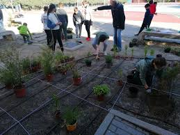
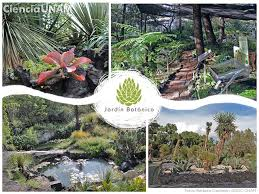
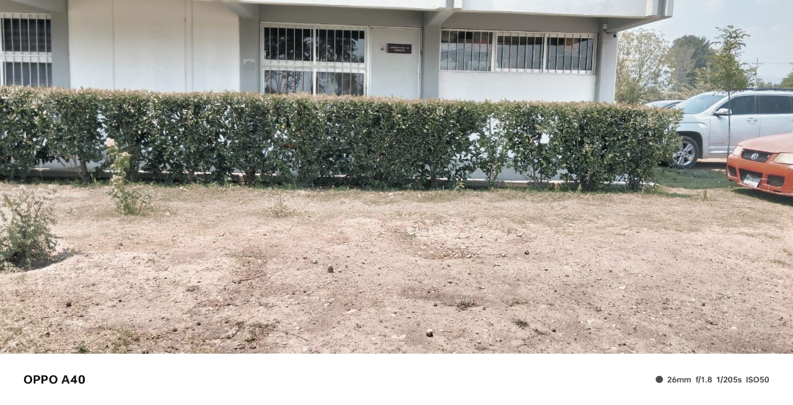
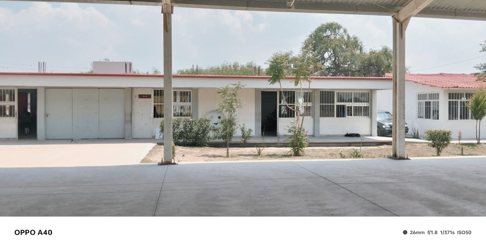
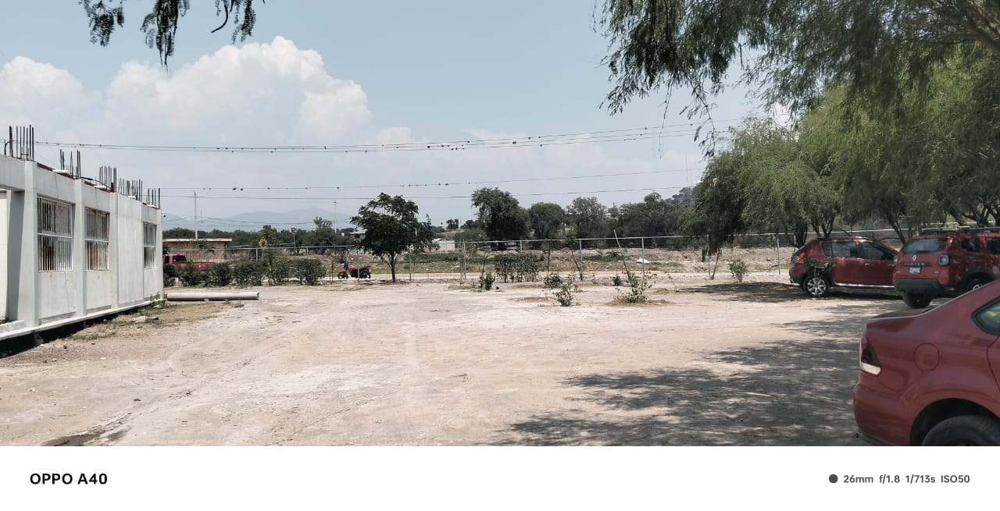

¿Que es un Jardin Botanico?
Un jardín botánico es un espacio educativo y de investigación que alberga colecciones documentadas de plantas vivas. Su propósito principal es apoyar la investigación científica, la conservación de la flora y la educación en temas botánicos y ambientales para los estudiantes y la comunidad escolar.
Educación y aprendizaje:
El jardín botánico se convierte en una herramienta para enseñar a los estudiantes sobre diferentes especies vegetales, sus características, ciclos de vida, importancia ecológica, y la importancia de la conservación de la biodiversidad.
Espacio de recreación y relajación:
El jardín botánico puede ser un lugar para el esparcimiento y la relajación, ofreciendo a los estudiantes y profesores un espacio para conectar con la naturaleza y desconectar del estrés académico.

¿Que tipo de plantas tiene?
Clasificación por tipo de planta:
Árboles: Pueden ser de hoja caduca (como robles y arces) o perenne (como coníferas).
Arbustos: Plantas leñosas, perennes, más pequeñas que los árboles.
Hierbas: Plantas no leñosas con tallos suaves y flexibles, muchas de ellas con propiedades medicinales.
Suculentas: Plantas que almacenan agua en sus hojas, tallos o raíces (ej. cactus).
Trepadoras: Plantas que necesitan un soporte para crecer (ej. enredaderas).

¿Cual es la funcion principal de un jardin botanico?
La función principal de un jardín botánico es la conservación, investigación y educación sobre la flora. Estos espacios albergan colecciones documentadas de plantas vivas, con el objetivo de apoyar la investigación científica, la conservación de especies amenazadas y la educación ambiental, según la BGCI.
Los jardines botánicos tienen un lugar privilegiado para enseñarnos sobre la importancia de las plantas en nuestra vida y en el ecosistema global. Al resaltar las amenazas que enfrentan las plantas y sus hábitats, los jardines pueden contribuir a que la sociedad busque formas de proteger la diversidad biológica.

¿Cual es el cuidado de una jardin botanico?
Se debe ser respetado y cuidado de forma integral, por ello no se permite colectar cualquier parte de las plantas ni tampoco pisar fuera de los senderos
Conseguir un suelo sano y libre de químicos. ...
Cambiar los abonos químicos por algo natural.
Nutrir las plantas.
Aportar materia orgánica.
Eliminar hojas secas.
Podar las partes secas de las plantas.
Atraer insectos beneficiosos.
Un suelo vivo.

¿Construccion de un Jadin Botanico
Implica un proceso detallado que comienza con la planificación meticulosa de las estructuras y los detalles, seguido de la preparación del terreno, la instalación de estructuras como invernaderos y edificios, y la plantación de colecciones de plantas científicamente organizadas.
1. Planificación y diseño:
Se definen los objetivos del jardín (investigación, conservación, educación, etc.).
Se planifica la distribución de las colecciones de plantas, considerando factores como el clima, el suelo y las necesidades de las especies.
Se diseña la infraestructura, incluyendo invernaderos, edificios para investigación y educación, y áreas de recreación para los visitantes.
2. Preparación del terreno:
Se limpia el terreno de maleza y se empareja.
Se realizan los agujeros para la plantación.
Se evalúan las condiciones del suelo y se realizan mejoras si es necesario, como el enmienda del suelo o la instalación de sistemas de drenaje.
3. Construcción de la infraestructura:
Se construyen invernaderos para plantas que requieren condiciones especiales de temperatura y humedad.
Se construyen edificios para albergar oficinas, laboratorios, salas de conferencias, y áreas de exhibición.
Se pueden construir estructuras como muros de contención, senderos, puentes, y áreas de descanso para los visitantes.
4. Plantación y mantenimiento:
Se plantan las colecciones de plantas, siguiendo un esquema de distribución científica.
Se etiquetan las plantas con información sobre su nombre científico, origen, y características.
Se lleva a cabo un seguimiento continuo de las plantas, incluyendo riego, fertilización, control de plagas, y poda.
5. Documentación y seguimiento:
Se mantiene un registro de las plantas, incluyendo información sobre su origen, estado de salud, y comportamiento.
Se realizan investigaciones y estudios sobre las plantas, tanto en el jardín como en el laboratorio.
Se documentan los resultados de la investigación y se comparten con la comunidad científica y el público.

¿Como se conforma un Jadin Botanico
Elementos clave para la conformación de un jardín botánico:
Colecciones de plantas vivas: Se agrupan según criterios como regiones geográficas, familias botánicas, propiedades medicinales o ecosistemas.
Herbarios: Conservan plantas secas, documentando su existencia y evolución.
Semilleros: Para la reproducción y conservación de especies.
Depósitos de semillas: Para la conservación a largo plazo de especies.
Invernaderos: Para especies exóticas o que necesitan condiciones climáticas especiales.
Zonas temáticas: Como arboretos, colecciones de orquídeas, o áreas de plantas medicinales.
Actividades de investigación: Estudio de las plantas, su comportamiento, reproducción y uso.
Educación y divulgación: Para promover la conservación de la flora y la naturaleza.
Conservación: De plantas nativas y microecosistemas.

Regresar